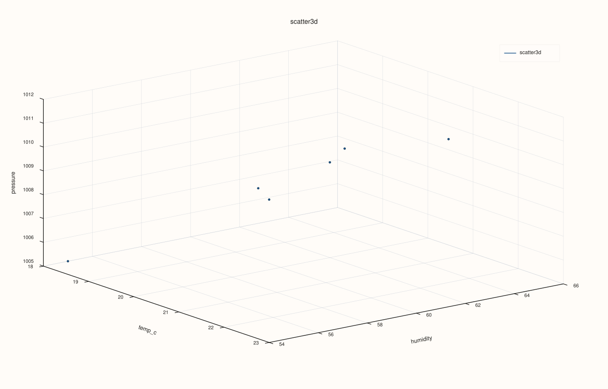
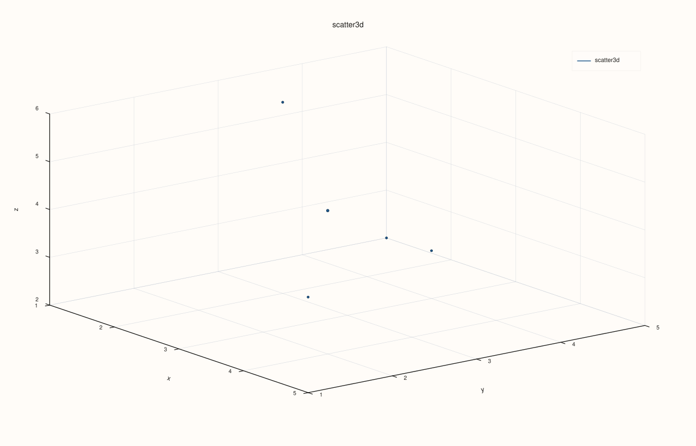

CatalogPlot3DAccessor::scatter¶
Back to CatalogPlot3DAccessor API Reference
Signatures¶
CatalogPlot3DAccessor::scatter(std::string_view x_key,
std::string_view y_key,
std::string_view z_key,
std::optional<std::string_view> size_key = std::nullopt,
std::optional<std::string_view> color_key = std::nullopt,
const pluss::table::Scatter3DPlotOptions& options = {}) const -> pluss::pl::Studio
CatalogPlot3DAccessor::scatter(std::string_view x_key,
std::string_view y_key,
std::string_view z_key,
std::optional<std::string_view> size_key,
std::optional<std::string_view> color_key,
const CatalogScatter3DPlotOptions& options) const -> pluss::pl::Studio
What It Does¶
Draws one 3D point per aligned (x_key, y_key, z_key) row, optionally scaling each point’s
marker size by size_key and/or its color by color_key — both continuous numeric
mappings, unlike CatalogPlotAccessor::scatter’s categorical
hue_key.
Important
Every requested key is reconciled together as one group, not pairwise
Catalog::plot3d() methods enforce only per-key type homogeneity, not length homogeneity
across keys — two keys can have entirely different lengths. Every key actually requested
here (x_key, y_key, z_key, and whichever of size_key/color_key are set) is
reconciled together in a single pass (catalog_align_numeric_streams), governed by two
independent settings: align (XYAlignMode: Strict/Inner/PadScalar — how a length
mismatch across the group is handled) and align_by (XYAlignBy: Auto/Label/Pos —
whether reconciliation is positional or by each stream’s own attached label). This is the
N-key generalization of CatalogPlotAccessor::scatter’s
two-key pairwise alignment, using the same XYAlignMode/XYAlignBy types
CatalogPlotAccessor::line
uses for its own x_key/y-key reconciliation. See Example 4.
Parameters¶
x_key, y_key, z_key (std::string_view, required)
The three keys forming each point’s 3D position.
size_key (std::optional<std::string_view>, default std::nullopt)
Optional numeric key controlling each point’s marker size. When omitted,
options.default_marker_size is used uniformly for every point.
color_key (std::optional<std::string_view>, default std::nullopt)
Optional numeric key controlling each point’s color, as a continuous color-mapped value
— not a categorical grouping the way hue_key is on the 2D scatter().
options (pluss::table::Scatter3DPlotOptions or CatalogScatter3DPlotOptions)
```cpp
struct Plot3DSceneOptions {
std::optional
struct Plot3DTraceOptions {
std::optional<TracePreset3D> preset{std::nullopt};
std::optional<pluss::pl::ShadeMode> shade{std::nullopt};
std::optional<pluss::pl::LightingMode> lighting{std::nullopt};
std::optional<pluss::pl::MaterialProfile> material{std::nullopt};
std::optional<float> line_width{std::nullopt};
std::optional<bool> transparent{std::nullopt};
};
enum class XYAlignMode : std::uint8_t { Strict, Inner, PadScalar };
enum class XYAlignBy : std::uint8_t { Auto, Label, Pos };
struct XYAlignOptions {
XYAlignMode mode{XYAlignMode::Strict};
XYAlignBy align_by{XYAlignBy::Auto};
double pad_scalar{0.0};
};
struct Scatter3DPlotOptions {
Plot3DSceneOptions scene{};
Plot3DTraceOptions trace{};
double default_marker_size{12.0};
XYAlignOptions align{XYAlignMode::Inner, XYAlignBy::Auto, 0.0};
};
struct CatalogScatter3DPlotOptions {
pluss::table::XYAlignMode align{pluss::table::XYAlignMode::Inner};
pluss::table::XYAlignBy align_by{pluss::table::XYAlignBy::Auto};
double pad_scalar{0.0};
pluss::table::Scatter3DPlotOptions scatter{};
};
```
Passing a bare `Scatter3DPlotOptions` (the first overload, also the one with all
defaulted arguments) is equivalent to passing a `CatalogScatter3DPlotOptions` built from
that value's own `align` field (`catalog_options.align = options.align.mode`, etc.) and
that `scatter` value. Note `Scatter3DPlotOptions::align` defaults to `Inner` here — a
looser default than [`LinePlotOptions::align`](../catalog-plot/line.md)'s
`Strict` default, since a 3D scatter's whole point is plotting keys that aren't expected
to share a row count. Unlike `CatalogPairAlignOptions` (used by the 2D pairwise methods),
there is no `PairwiseInner`/`GlobalInner` axis here — every requested key is always
reconciled together as one group, so `align`/`align_by`/`pad_scalar` are the only knobs.
Returns¶
pluss::pl::Studio
A figure with one 3D pane holding a single point-cloud trace.
Examples¶
Example 1. Three keys, no size or color mapping.
using namespace pluss::kindle::literals;
auto measurements = pluss::kindle::Catalog({
"temp_c"_k = pluss::kindle::Stream(pluss::make_series({18.0, 19.5, 21.0, 20.0, 22.5, 23.0})),
"humidity"_k = pluss::kindle::Stream(pluss::make_series({55.0, 60.0, 65.0, 62.0, 58.0, 54.0})),
"pressure"_k = pluss::kindle::Stream(pluss::make_series({1005.0, 1008.0, 1010.0, 1009.0, 1012.0, 1011.0})),
"wind"_k = pluss::kindle::Stream(pluss::make_series({5.0, 6.0, 4.0, 7.0, 5.5, 6.2})),
"co2"_k = pluss::kindle::Stream(pluss::make_series({410.0, 415.0, 412.0, 418.0, 420.0, 417.0})),
});
auto chart = measurements.plot3d().scatter("temp_c", "humidity", "pressure");
chart.show();
Every point uses options.default_marker_size (12.0) uniformly, with no color mapping.

Example 2. Adding size_key: marker size now scales with wind.
using namespace pluss::kindle::literals;
auto measurements = pluss::kindle::Catalog({
"temp_c"_k = pluss::kindle::Stream(pluss::make_series({18.0, 19.5, 21.0, 20.0, 22.5, 23.0})),
"humidity"_k = pluss::kindle::Stream(pluss::make_series({55.0, 60.0, 65.0, 62.0, 58.0, 54.0})),
"pressure"_k = pluss::kindle::Stream(pluss::make_series({1005.0, 1008.0, 1010.0, 1009.0, 1012.0, 1011.0})),
"wind"_k = pluss::kindle::Stream(pluss::make_series({5.0, 6.0, 4.0, 7.0, 5.5, 6.2})),
});
auto chart = measurements.plot3d().scatter("temp_c", "humidity", "pressure", "wind");
chart.show();

Example 3. Adding both size_key and color_key: marker size scales with wind, color
scales continuously with co2.
using namespace pluss::kindle::literals;
auto measurements = pluss::kindle::Catalog({
"temp_c"_k = pluss::kindle::Stream(pluss::make_series({18.0, 19.5, 21.0, 20.0, 22.5, 23.0})),
"humidity"_k = pluss::kindle::Stream(pluss::make_series({55.0, 60.0, 65.0, 62.0, 58.0, 54.0})),
"pressure"_k = pluss::kindle::Stream(pluss::make_series({1005.0, 1008.0, 1010.0, 1009.0, 1012.0, 1011.0})),
"wind"_k = pluss::kindle::Stream(pluss::make_series({5.0, 6.0, 4.0, 7.0, 5.5, 6.2})),
"co2"_k = pluss::kindle::Stream(pluss::make_series({410.0, 415.0, 412.0, 418.0, 420.0, 417.0})),
});
auto chart = measurements.plot3d().scatter("temp_c", "humidity", "pressure", "wind", "co2");
chart.show();

Example 4. CatalogScatter3DPlotOptions with align_by = Label, over three streams of
different lengths that each carry their own label — every key is aligned together to their
common labels in one pass.
using namespace pluss::kindle::literals;
auto x_stream = pluss::kindle::Stream(pluss::make_series({1.0, 2.0, 3.0, 4.0, 5.0}))
.with_label(pluss::table::Slate(pluss::make_note({"a", "b", "c", "d", "e"})));
auto y_stream = pluss::kindle::Stream(pluss::make_series({10.0, 20.0, 30.0, 40.0}))
.with_label(pluss::table::Slate(pluss::make_note({"b", "c", "d", "e"})));
auto z_stream = pluss::kindle::Stream(pluss::make_series({100.0, 200.0, 300.0}))
.with_label(pluss::table::Slate(pluss::make_note({"c", "d", "e"})));
auto labeled = pluss::kindle::Catalog({
"x_metric"_k = x_stream, "y_metric"_k = y_stream, "z_metric"_k = z_stream,
});
pluss::kindle::CatalogScatter3DPlotOptions options;
options.align_by = pluss::table::XYAlignBy::Label;
auto chart = labeled.plot3d().scatter("x_metric", "y_metric", "z_metric", std::nullopt, std::nullopt, options);
chart.show();
x_metric/y_metric/z_metric have 5/4/3 values respectively; only the 3 labels common to
all three ("c", "d", "e") survive — every point in the resulting cloud has a valid
value from all three keys.

Example 5. An unknown key throws.
using namespace pluss::kindle::literals;
auto measurements = pluss::kindle::Catalog({
"temp_c"_k = pluss::kindle::Stream(pluss::make_series({18.0, 19.5, 21.0})),
"humidity"_k = pluss::kindle::Stream(pluss::make_series({55.0, 60.0, 65.0})),
"pressure"_k = pluss::kindle::Stream(pluss::make_series({1005.0, 1008.0, 1010.0})),
});
try {
auto bad = measurements.plot3d().scatter("nope", "humidity", "pressure");
} catch (const std::exception& e) {
std::cout << e.what();
}
Output¶
Catalog::plot3d().scatter: unknown x key 'nope'
Notes¶
size_key/color_keyare both continuous numeric mappings — there is no categorical hue grouping onplot3d()the wayCatalogPlotAccessor::scatter’shue_keyhas.Every requested key (2–5 of them, depending on how many optional keys are set) is aligned together as one group — see the important callout above.
align_by = Labelrequires every requested key to carry its own label (Stream::with_label());Pos/Auto-with-a-missing-label falls back to positional reconciliation, governed byalign.align(XYAlignMode) defaults toInnerhere (truncate to the shortest/common overlap) — a looser default thanline()/step()/area()/bar()’sStrictdefault, since a 3D scatter’s whole point is plotting keys that aren’t expected to share a row count.PadScalarpads any missing position/label withpad_scalar(default0.0) instead of dropping it.Returns a
pluss::pl::Studio— seeCatalogPlotAccessor::line’s important callout for how to view or save the result.
See Also¶
CatalogPlotAccessor::scatter: the 2D counterpart, with a categoricalhue_keyinstead of a continuouscolor_key.CatalogPlot3DAccessor::line: the same three-key idea, connected as a path instead of independent points.Catalog::plot3d: how to enter this accessor in the first place.